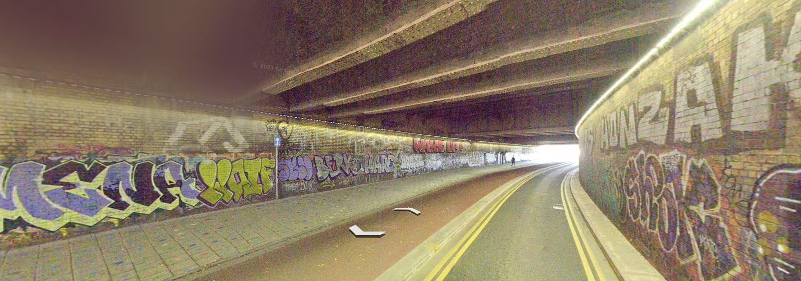

Molotow Bristol
Molotow is a new graffiti supplies store within bristol that can provide any marker or spray paint to do graffiti with. The store can be found at Molotow Bristol Unit 2, The Court Rooms, Nelson Street Bristol. BS1 2AF
Molotow is a new graffiti supplies store within bristol that can provide any marker or spray paint to do graffiti with. The store can be found at Molotow Bristol Unit 2, The Court Rooms, Nelson Street Bristol. BS1 2AF
Feeder Road, BS2 0SB, Bristol. In this area you will find many graffiti pieces and all types of styles thoughout the back lanes that run along the side of the river avon and underneath the traintracks of Bristol Temple Meads.
